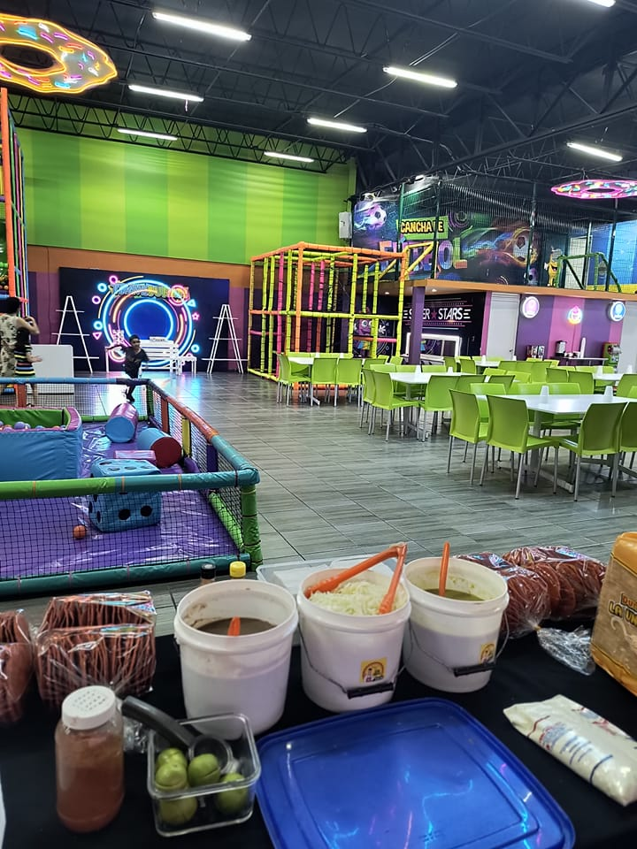

Servicios para Eventos
En Tradicional Sabor Don Dimas ofrecemos paquetes especiales para tus eventos. Puedes elegir entre dos opciones:
- Venta de paquetes: Te entregamos todo lo necesario para tu evento, incluyendo:
- Tostadas
- Duritos
- Frijoles
- Repollo
- Salsa
- Crema
- Polvo
- Limones
- Desechables
- Garrafónes de agua de melón

- Servicio con preparacion: Además de los ingredientes, llevamos a alguien que estara preparando las botanas en el transcurso de tu evento.

¡Contáctanos para cotizar tu evento y llevar el auténtico sabor a tu celebración!